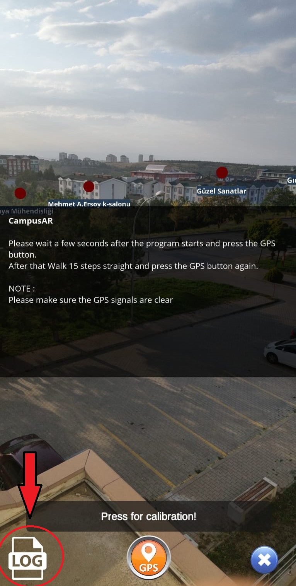
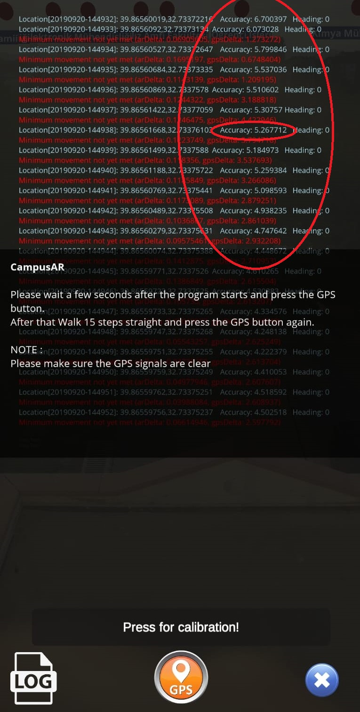

Download CampusAR
Follow the steps below to download the app:
- Make sure that your mobile device supports the Augmented Reality which is Google platform ArCore.
Please check the android supported devices.
- If your mobile device is supported by ArCore, it can be downloaded CampusAR. Go to
download link.
How to use CampusAR
There are some important rules to use CampusAR:
- Don't forget start GPS services.
- Calibration required when program starts. Please read the calibration section.
- Calibration required when program starts. Please read the calibration section.
Calibration
- Make sure that GPS signals are clear.
- GPS accuracy can be checked from Log file in the program.


- When you sure GPS accuracy is enough (under 5 meters), press the GPS button.
- Walk approximetly 15 steps in the direction you started the application.
- Again press the GPS button.
- Calibration stage is completed. You can use the application anymore.